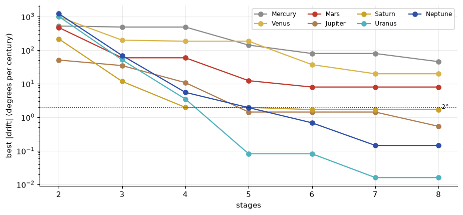
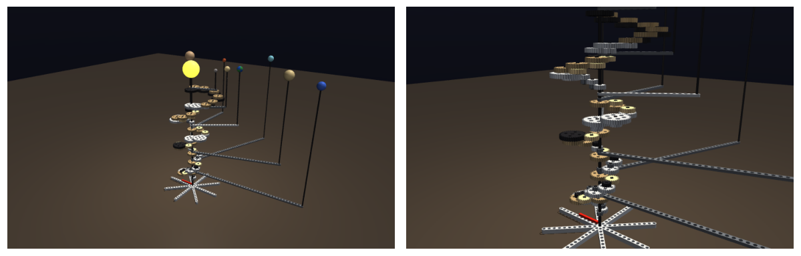

Eight planets, one crank, 84 Technic gears: a grand orrery designed by search and run in MuJoCo
Extending the LEGO Technic orrery to all eight planets. One turn of the crank is one year; each planet gets its own gear train found by exhaustive search over LEGO’s 7-smooth ratios; the trains stack into a tiered tower; and the simulated machine is started at today’s planetary positions and run for a century to see how far it drifts from the sky.
mechanics
lego
number theory
astronomy
python
Author
Paul Milne
Published
October 27, 2026
The Earth–Moon orrery showed that LEGO Technic gears can only make ratios built from the primes 2, 3, 5 and 7, and that a search over every train the parts allow finds surprisingly good approximations to the year and the month. This post takes the same idea to its limit: a grand orrery with all eight planets, from Mercury, which goes round the Sun in under three months, to Neptune, which takes 165 years.
About the model and the sources
The planets’ mean longitudes and their rates are from JPL’s Approximate Positions of the Planets (link at the end). The orrery is a design, simulated in MuJoCo with every gear a moving part; it has not been built. Its sizes and distances are not to scale, as in every real orrery.
Show code
import sys, math, time, datetime as dt, warningsfrom pathlib import Pathfrom fractions import Fractionwarnings.filterwarnings("ignore")here = Path.cwd().resolve()ROOT =next(p for p in (here.parents[1] /"lego-bricks", here.parent /"lego-bricks", here.parents[1] /"mechanics"/"lego-bricks") if (p /"bricks").exists())sys.path.insert(0, str(ROOT))import numpy as npimport matplotlib.pyplot as pltimport mujocofrom bricks import gears as Gfrom bricks import solar as Splt.rcParams.update({"figure.dpi": 110, "axes.grid": True, "grid.alpha": 0.25,"axes.spines.top": False, "axes.spines.right": False})PCOL = {"Mercury": "#8c8c8c", "Venus": "#d9b44a", "Earth": "#2c7fb8", "Mars": "#c0392b","Jupiter": "#b07d4f", "Saturn": "#c9a227", "Uranus": "#4fb3bf", "Neptune": "#2f4fa8"}
One crank, eight ratios
Let one turn of the crank be one year, and fix the Earth’s arm straight to the crank shaft. Every other planet then needs a gear train whose ratio is its orbital period in Earth years. JPL tabulates each planet’s mean longitude, the angle it would have reached if it moved round the Sun at a steady rate, and how fast that angle grows. The ratio of each planet’s rate to the Earth’s is the gear ratio the orrery needs.
Show code
print(f"{'planet':8s}{'rate (°/century)':>18s}{'period (years)':>15s}{'orbits per century':>19s}")for p, (L0, rate) in G.PLANETS.items(): P = G.planet_ratio(p)print(f"{p:8s}{rate:18.3f}{P:15.6f}{100/ P:19.3f}")
planet rate (°/century) period (years) orbits per century
Mercury 149472.674 0.240842 415.209
Venus 58517.815 0.615187 162.552
Earth 35999.372 1.000000 100.000
Mars 19140.303 1.880815 53.168
Jupiter 3034.746 11.862400 8.430
Saturn 1222.494 29.447493 3.396
Uranus 428.482 84.016062 1.190
Neptune 218.459 164.787433 0.607
Mercury and Venus are faster than the Earth, so their trains must speed up rather than slow down. In the Earth–Moon orrery every stage was a reduction; here a stage may go either way, a small gear driving a big one or a big one driving a small one. A worm cannot be driven backwards, so worms are out.
Fast planets are hard
How good does a ratio have to be? An orrery is judged by where its planets point, so the natural measure is the angle a planet drifts from the sky over a century. If a train’s ratio is off by a fraction \(\varepsilon\), a planet making \(n\) orbits per century drifts by about
The same fractional error costs Mercury, with 415 orbits a century, nearly 700 times as much as it costs Neptune, with 0.6. A slow planet can be geared roughly; a fast one needs a fine ratio. The search below builds every train of up to eight stages, now with stages in both directions, and reports the best drift each planet can reach.
Show code
t0 = time.time()levels = G.reachable_mixed(8)print(f"{sum(len(v) for v in levels.values()):,} distinct ratios with up to 8 stages, found in {time.time() - t0:.2f} s\n")drift = {}print(f"{'planet':8s}"+"".join(f"{f'{k} stages':>11s}"for k inrange(3, 9)) +" (best drift, degrees per century)")for p in G.PLANETS:if p =="Earth":continue x = G.planet_ratio(p) best = G.best_reachable(x, levels) drift[p] = {k: 360* (100/ x) * (1/ (1+ best[k][2]) -1) for k inrange(1, 9)}print(f"{p:8s}"+"".join(f"{drift[p][k]:+11.2f}"for k inrange(3, 9)))
17,185 distinct ratios with up to 8 stages, found in 0.39 s
planet 3 stages 4 stages 5 stages 6 stages 7 stages 8 stages (best drift, degrees per century)
Mercury +490.43 +490.43 -141.95 -79.72 -79.72 -45.57
Venus -198.84 -185.50 -185.50 +37.12 +19.83 +19.83
Mars +59.36 +59.36 -12.36 -7.98 -7.98 -7.98
Jupiter -34.80 -10.80 +1.44 +1.44 +1.44 +0.54
Saturn +11.77 +1.97 +1.97 +1.69 +1.69 +1.69
Uranus +51.51 +3.51 +0.08 +0.08 -0.02 -0.02
Neptune +69.54 +5.54 +1.94 -0.69 +0.15 +0.15
Show code
fig, ax = plt.subplots(figsize=(8.5, 4))for p, dd in drift.items(): ks =range(2, 9) ax.semilogy(ks, [max(abs(dd[k]), 1e-3) for k in ks], "o-", color=PCOL[p], label=p)ax.axhline(2, color="black", ls=":", lw=1); ax.text(8.05, 2, "2°", va="center", fontsize=8)ax.set_xlabel("stages"); ax.set_ylabel("best |drift| (degrees per century)")ax.legend(ncol=4, fontsize=8, loc="upper right")plt.tight_layout(); plt.show()

Figure 1: The best drift each planet’s train can reach, in degrees per century, against the number of stages allowed. The slow outer planets are within a couple of degrees by four or five stages; Mercury, with 415 orbits a century, is still tens of degrees out with eight.
The orrery takes, for each planet, the shortest train that drifts less than 2° a century, or, where none does, the shortest train that reaches the best accuracy eight stages allow:
Show code
trains = S.choose_trains()gearlist =lambda st: " · ".join(f"{a}→{b}"for a, b in st)for p in S.ORDER_OUT_IN[::-1]: r, st, dr = trains[p]if p =="Earth":print(f"{p:8s}{'1':>18s}{'':>10s} on the crank shaft itself")continue num, den = r.numerator, r.denominatorprint(f"{p:8s}{str(r):>18s} = {float(r):9.5f}{len(st)} stages, drift {dr:+6.2f}°/century")print(f"{'':8s}{gearlist(st)}")
Some of the winners are pleasingly simple. Uranus is \(84\) to one, made as \(2\cdot2\cdot3\cdot3\cdot\tfrac{7}{3}\), and drifts less than a tenth of a degree a century. Others are the opposite: Mercury’s best eight-stage ratio is
a fraction no one would write down by hand, and it still drifts by tens of degrees a century. Mercury is the planet a LEGO orrery cannot keep up with.
The machine
The trains are stacked into a tiered tower round the crank shaft, the classic layout of a grand orrery:
Order of the tiers. The outer planets are at the bottom with the longest arms and the inner planets at the top with the shortest, so the post carrying each planet up to the common height never meets an arm above it.
Each tier is one planet’s train. It starts with a gear on the shaft at the bottom of the tier and coils round the shaft on a circle of axles, ending on the planet’s hub at the top. The hub is a tube on the shaft, carrying the planet’s arm. A train with an odd number of meshes gets an idler, so that every planet goes round the same way.
The Earth has no tier of its own: its arm is fixed to the crank shaft.
As in the Earth–Moon orrery, every mesh in MuJoCo is a fixed tendon, a linear combination of joint angles held at zero, so the crank is the only thing driven and everything else follows through the gears.
Show code
m, facts = S.load(trains=trains)d = mujoco.MjData(m); mujoco.mj_forward(m, d)r = mujoco.Renderer(m, 450, 720)opt = mujoco.MjvOption(); opt.sitegroup[:] =0imgs = []for cam in ("overview", "tower"): r.update_scene(d, camera=cam, scene_option=opt); imgs.append(r.render().copy())fig, ax = plt.subplots(1, 2, figsize=(11, 3.6))for a_, im inzip(ax, imgs): a_.imshow(im); a_.axis("off")plt.tight_layout(); plt.show()print(f"{facts['n_gears']} gears, {facts['n_meshes']} meshes, tower {facts['height']:.0f} mm to the planets' plane")

Figure 2: The orrery in MuJoCo, on 27 October 2026. Left: the whole machine. Right: the gear tower, with Neptune’s train at the bottom and Mercury’s at the top.
84 gears, 44 meshes, tower 388 mm to the planets' plane
One liberty: the hubs are concentric tubes on a single shaft, eight deep. Real LEGO has no nested tubes, so a physical build would carry the arms on stacked turntables or bring the drives in from outside. The arithmetic does not change.
Running it
The arms are set at each planet’s mean longitude for 27 October 2026. Turning the crank for a century of simulated years, and reading each planet’s angle from the simulation:
Show code
m, facts = S.load(trains=trains)d = mujoco.MjData(m); d.ctrl[0] =2* math.pi # one turn (year) per simulated secondt0 = time.time()while S.turns(m, d, facts)["Earth"] <100: mujoco.mj_step(m, d)T = S.turns(m, d, facts)years = T["Earth"]days_per_turn =36525*360/ G.PLANETS["Earth"][1] # days in one turn of the Earth's mean longitudejd_end = S.JD_START + years * days_per_turnlon_model = S.longitudes(m, d, facts)print(f"ran {years:.2f} years in {time.time() - t0:.1f} s of computing\n")print(f"{'planet':8s}{'orbits':>9s}{'gear ratio check':>17s}{'orrery':>8s}{'sky':>8s}{'drift':>8s}")for p in S.ORDER_OUT_IN[::-1]: sky = G.mean_longitude(p, jd_end) diff = (lon_model[p] - sky +180) %360-180 check = years / T[p] if T[p] elsefloat("nan")print(f"{p:8s}{T[p]:9.3f}{check:12.5f}/{float(trains[p][0]):<9.5f}{lon_model[p]:7.1f}° {sky:7.1f}° {diff:+7.1f}°")
ran 100.00 years in 1.6 s of computing
planet orbits gear ratio check orrery sky drift
Mercury 415.087 0.24092/0.24092 50.1° 95.7° -45.6°
Venus 162.609 0.61498/0.61498 255.0° 235.1° +19.8°
Earth 100.001 1.00000/1.00000 35.4° 35.4° -0.0°
Mars 53.147 1.88160/1.88160 141.5° 149.5° -8.0°
Jupiter 8.434 11.85679/11.85679 284.5° 283.1° +1.4°
Saturn 3.401 29.40000/29.40000 162.3° 160.3° +2.0°
Uranus 1.190 84.00001/84.00000 136.7° 136.6° +0.1°
Neptune 0.612 163.33335/163.33333 223.9° 221.9° +1.9°
The simulation reproduces every train’s ratio to five or six figures, and after a century the planets have drifted from the sky by just what the arithmetic predicted: a degree or two for the outer planets, 8° for Mars, 20° for Venus and 46° for Mercury.
Figure 3: Where the planets are, seen from above the Sun: on the start date (left) and a century later (right). Filled circles: the orrery. Open circles: the sky (mean longitudes). Radii are the orrery’s arm lengths, not the planets’ distances.
The second video looks straight down on the orrery for one whole orbit of Neptune, 165 years. Mercury goes round nearly seven hundred times, far too fast for the camera to follow.
What the gears cannot do
Two things separate this machine from the sky, and only one is the arithmetic.
Rational ratios. Every LEGO train is a ratio of 7-smooth numbers, and the search shows how far that limits each planet. The cure is the one from the Earth–Moon orrery: differentials, which add rotations together, reach ratios no product of LEGO gears can. A watchmaker’s alternative is simply to cut the tooth counts the sky asks for.
Steady motion. Gears turn at constant rates, so the orrery shows each planet’s mean longitude. Real planets move on ellipses, faster near the Sun and slower far from it, by Kepler’s second law. The true position swings either side of the mean by up to about twice the orbit’s eccentricity, in radians: roughly 24° for Mercury, 11° for Mars and 2° for the Earth. Mechanical orreries have answered this since antiquity with eccentric gearing; the Antikythera mechanism used a pin-and-slot pair of gears to make its Moon speed up and slow down. A LEGO version, with a pin on one gear driving a slotted liftarm on the next, would be a good next build.